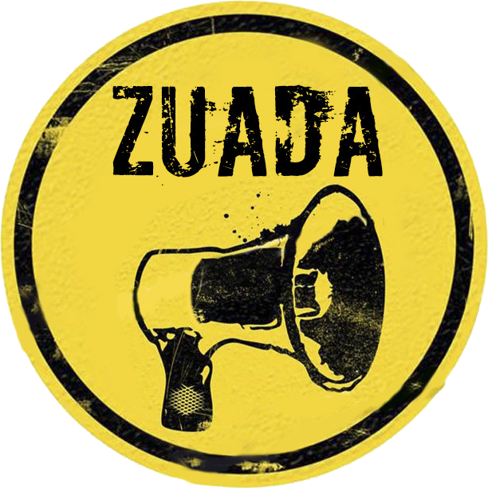

-

Quem somo nós:
O projeto ZUADA foi uma iniciativa de professores da UFC que perceberam a necessidade da presença do meio artístico no campus. O projeto iniciou-se no final de 2013 e hoje conta com aproximadamente 20 músicos. O ZUADA é a pura representação da arte no campus da UFC em Quixadá, englobando música, dança e teatro. Se você é membro do ZUADA, clique aqui e entre com a sua conta.
-
 Nossos projetos:
Nossos projetos:
O ZUADA realiza mensalmente apresentaçãoes no Restaurante Universitário da UFC Quixadá mas não se restinge a isso. Ultimamente somos chamados a expandir nossa área de apresentação para além do campus. O ZUADA tem-se apresentado fora do campus com o intuito de tornar público o projeto, bem como arrecadar berba para investir em instrumento e capacitação dos músicos.